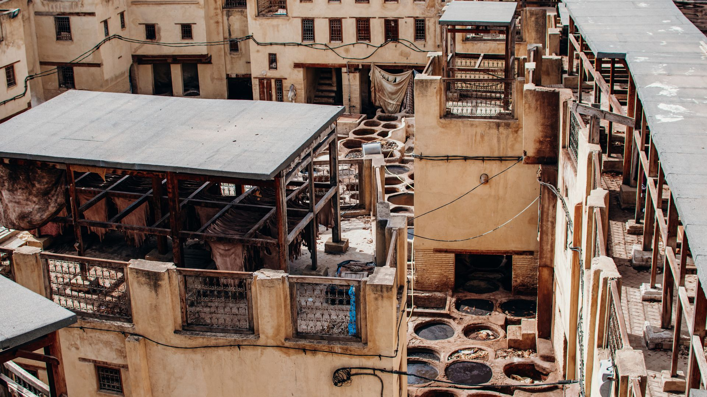

Closest to the dunes
Merzouga is about a day’s drive from Fes.

Private tours · Fes
Fes is the closest imperial city to the Sahara. Our private tours from Fes reach the Merzouga dunes through the Middle Atlas and finish in Marrakech or back in Fes — 3 to 6 days, with a night in an Erg Chebbi desert camp.
6 tours
Fes · Chefchaouen · Sahara · kasbahs · Marrakech
See itinerary2 nights in the Sahara · Merzouga · Marrakech
See itineraryFes · Merzouga · Sahara camp · Marrakech
See itineraryRound trip · Merzouga · Erg Chebbi dunes · Fes
See itineraryFes · Merzouga · Sahara night · Marrakech
See itineraryFes · Merzouga · camel trek · Erg Chebbi camp
See itineraryMerzouga is about a day’s drive from Fes.
Start after exploring the medina of Fes, a UNESCO site.
Cedar forests and Berber villages on the way south.
Cross Morocco one way and fly home from Marrakech.
About 7 to 8 hours with stops in the Middle Atlas, so you arrive in Merzouga in time for the camel trek at sunset.
The 4 and 5 day Fes to Marrakech desert tours are the most popular: one or two nights in the Sahara, then the kasbahs on the way to Marrakech.
Yes, the 4 days desert tour from Fes to Fes returns to Fes after the Sahara.
Tell us your dates and wishes — we reply in under 24 hours with a personalised itinerary.